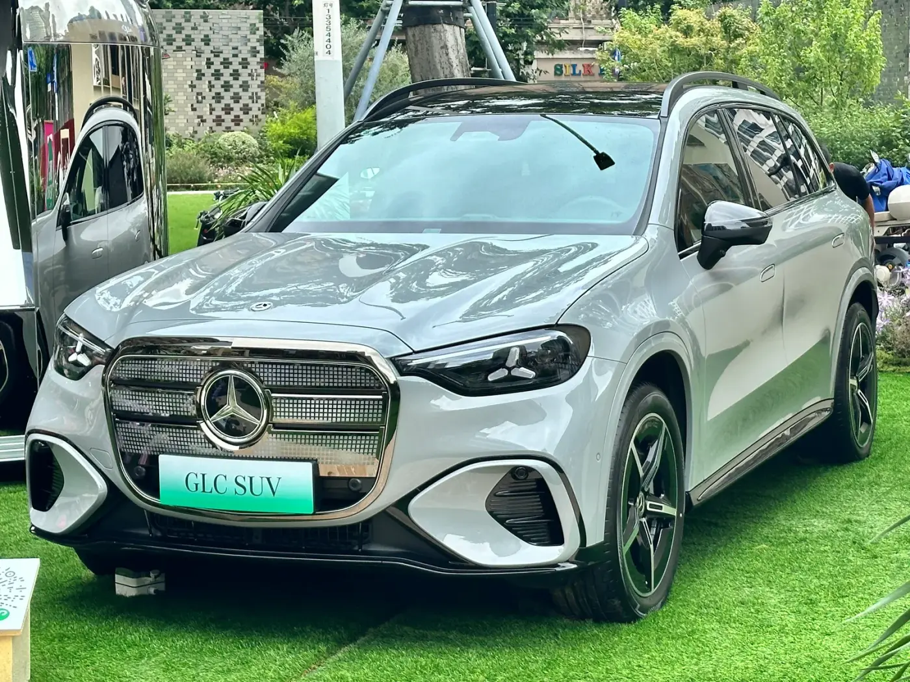
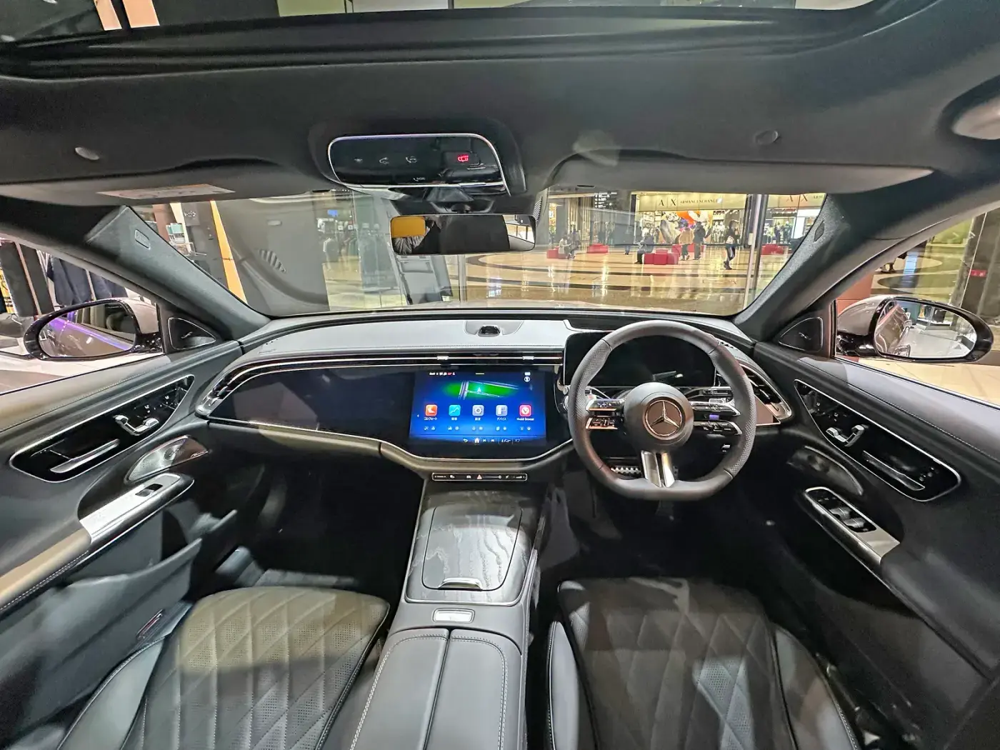
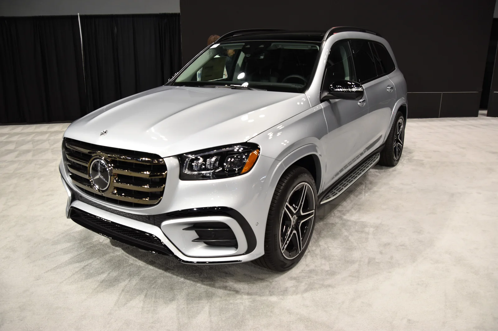

▲ 메르세데스-벤츠 C-Class. 한성자동차는 국내 벤츠 공식 딜러사 중 가장 많은 서비스센터를 운영하는 최대 딜러사다 ⓒ Wikimedia Commons
2026년 6월 23일, 메르세데스-벤츠 공식 딜러사 한성자동차가 방송인 진달래 아나운서를 브랜드 앰버서더로 선정했다고 밝혔다. 눈여겨볼 대목은 '누가' 뽑았느냐다. 앞서 AMG 앰버서더로 배우 주지훈을 선정한 것도, KLPGA 프로 박현경·김민별을 앰버서더로 두고 있는 것도 모두 수입원인 메르세데스-벤츠 코리아 본사였다. 이번엔 다르다. 벤츠 차량을 직접 팔고 정비하는 딜러사 한성자동차가 자체적으로 앰버서더를 뽑았다. 수입차 업계에서 딜러사 단위의 앰버서더 발탁은 흔한 사례가 아니다.
1. 왜 '딜러사'가 앰버서더를 뽑는 게 이례적인가

▲ 메르세데스-벤츠 E 200 익스클루시브. 한성자동차가 지난 9월 할부 프로모션을 진행한 모델 중 하나다 ⓒ Tokumeigakarinoaoshima, Wikimedia Commons (CC0)
브랜드 앰버서더 마케팅은 보통 자동차 제조사나 국내 수입원이 주도한다. 이미지 마케팅으로 전국 단위 인지도를 끌어올리는 것이 목적이기 때문에, 예산과 결정권을 가진 본사가 나서는 구조가 일반적이다. 벤츠코리아만 봐도 고성능 브랜드 AMG를 위해 주지훈을, 골프 마케팅을 위해 KLPGA 프로 박현경·김민별을 앰버서더로 뒀다. 반면 한성자동차 같은 딜러사는 통상 본사가 만든 마케팅 자산을 매장·서비스 단계에서 활용하는 역할에 머문다.
그런데 이번엔 딜러사가 직접 앰버서더를 세웠다. 이 지점이 이례적인 이유는 딜러사의 역할 자체에 있다. 벤츠코리아가 상대하는 건 '잠재 구매자를 포함한 전체 대중'이지만, 한성자동차가 상대하는 건 실제로 매장에 방문하고 서비스센터를 이용하는 기존·잠재 고객이다. 즉 이번 발탁은 브랜드 이미지 확산이 아니라, 이미 관계를 맺고 있거나 맺을 가능성이 높은 고객층을 향한 밀착형 커뮤니케이션에 방점이 찍혀 있다.
| 구분 | 발탁 주체 | 앰버서더 | 목적 |
|---|---|---|---|
| AMG 앰버서더 | 메르세데스-벤츠 코리아(본사) | 배우 주지훈 | 고성능 서브 브랜드 이미지 구축, 전국 단위 인지도 |
| 골프 앰버서더 | 메르세데스-벤츠 코리아(본사) | 박현경·김민별(KLPGA) | 스포츠 마케팅, SNS를 통한 팬·고객 소통 |
| 딜러사 앰버서더 | 한성자동차(딜러사) | 진달래(아나운서) | 클럽한성 고객 프로그램·매장 서비스 경험 전달, 디지털 소통 |

▲ 메르세데스-벤츠 GLC. 한성자동차는 지난 8월 일렉트릭 GLC 사전계약이 700대를 넘었다고 밝힌 바 있다 ⓒ Wikimedia Commons
2. 한성자동차는 어떤 딜러사인가

▲ 메르세데스-벤츠 S-Class. 한성자동차는 1987년부터 벤츠를 국내에 독점 수입·판매해온 최대 딜러사다 ⓒ Wikimedia Commons
한성자동차는 국내 벤츠 공식 딜러사 가운데 서비스센터 수가 가장 많은 최대 딜러사로 꼽힌다. 전국 21개 서비스센터를 운영하며, 수입차 업계 최초로 전국 21개 서비스센터 전부가 KS 서비스 인증을 획득했다. 2026년 5월 20일 서울 웨스틴 조선 서울에서 열린 벤츠코리아 '2025 딜러 어워드'에서도 '최고의 AS 매니저' 부문과 '최고의 인증중고차 전시장' 부문에서 1위를 차지하며 서비스 경쟁력을 인정받았다. 한성자동차는 1985년 설립돼 1987년부터 메르세데스-벤츠를 국내에 독점 수입·판매하기 시작했으며, 같은 해 문을 연 용답 서비스센터는 국내 최초의 벤츠 공식 서비스센터로 꼽힌다. 홍콩계 투자회사 레이싱홍 그룹 산하에 있고, 메르세데스-벤츠 코리아 지분 일부를 보유한 대주주이기도 하다.
매출 규모로도 한성자동차는 벤츠 딜러사 중 최상위권이다. 벤츠 딜러사들의 전체 매출에서 한성자동차와 효성 계열이 차지하는 비중이 압도적으로 크다는 점은 여러 차례 보도된 바 있다. 다만 최신 연도 기준 정확한 시장 점유율 수치나 정확한 매장 총 수는 공개 자료로 확인되지 않아 이번 기사에서는 다루지 않았다. 분명한 건, 한성자동차가 벤츠코리아 입장에서도 무시할 수 없는 규모의 최대 판매·서비스 파트너라는 점이다. 이런 규모의 딜러사이기 때문에, 본사 차원의 앰버서더 마케팅과는 별개로 자체적인 고객 커뮤니케이션 채널을 만들 여력과 필요가 있었던 것으로 풀이된다.

▲ 메르세데스-AMG S63. 벤츠코리아 본사는 이 고성능 서브 브랜드를 위해 별도로 배우 주지훈을 앰버서더로 선정했다 ⓒ Wikimedia Commons
3. 진달래는 왜 뽑혔나 — 스포츠 방송 진행 이력
진달래는 SBS 스포츠 소속 방송인으로, 골프 프로그램 'SBS골프 아카데미'와 프로야구 중계 프로그램 '베이스볼S' 등 다양한 스포츠 프로그램을 진행해왔다. 한성자동차는 그의 안정적인 진행 능력과 신뢰감 있는 커뮤니케이션 역량, 대중적인 이미지가 고객 소통 강화에 도움이 될 것이라고 밝혔다. 배우의 필모그래피나 이미지를 브랜드 정체성에 매칭했던 AMG×주지훈, 서사를 통해 신뢰를 설득했던 폴스타×김우빈 사례와 달리, 이번 발탁 근거는 연기력이나 흥행 이력이 아니라 방송 진행자로서 쌓아온 전달력이다. 딜러사가 원하는 앰버서더 역할이 '화제성'보다 '설명력'에 가깝다는 걸 보여주는 대목이다.
진달래는 선정 소감에서 "평소 많은 고객들에게 사랑받아온 한성자동차의 브랜드 앰버서더로 함께하게 되어 기쁘게 생각한다"며 "앞으로 디지털 콘텐츠와 다양한 고객 프로그램을 통해 한성자동차와 메르세데스-벤츠 브랜드의 가치와 차별화된 고객 경험을 보다 친근하게 소통할 수 있도록 최선을 다하겠다"고 밝혔다. 김마르코 한성자동차 대표는 "진달래 아나운서와 함께 고객들이 보다 쉽고 친근하게 브랜드를 경험할 수 있는 다양한 콘텐츠를 선보일 예정"이라며 "앞으로도 디지털 커뮤니케이션과 고객 프로그램을 통해 고객과의 접점을 지속적으로 확대해 나가겠다"고 코멘트했다.

▲ 메르세데스-벤츠 E-Class 실내. 진달래는 앰버서더로서 벤츠 차량 경험을 소개하는 디지털 콘텐츠에 출연할 예정이다 ⓒ Wikimedia Commons
4. '디지털 소통 강화'는 구체적으로 무엇을 의미하나

▲ 메르세데스-벤츠 G580. 한성자동차는 신차 행사와 고객 초청 프로그램에도 진달래를 참여시킬 계획이다 ⓒ Wikimedia Commons
보도를 종합하면 '디지털 소통 강화'는 추상적 구호가 아니라 세 갈래의 실행 계획으로 구체화된다. 첫째, 메르세데스-벤츠 차량 경험과 브랜드 스토리, 고객 혜택을 소개하는 디지털 콘텐츠 제작에 진달래가 직접 출연한다. 둘째, 한성자동차가 주최하는 신차 출시 행사와 고객 초청 프로그램에 참여해 현장에서 고객과 소통한다. 셋째, 차량 관리와 재구매 혜택, 스포츠·문화·라이프스타일 프로그램을 제공하는 고객 멤버십 '클럽한성' 행사에도 참여한다.
정리하면 이 세 활동 모두 겨냥하는 대상은 불특정 다수가 아니라 이미 한성자동차와 접점이 있거나 구매를 고려 중인 고객이다. 벤츠코리아 본사의 앰버서더가 TV 광고나 SNS를 통해 브랜드 이미지를 넓게 퍼뜨리는 역할이라면, 한성자동차의 앰버서더는 매장·서비스센터·멤버십 프로그램이라는 실제 구매 여정의 접점에서 콘텐츠와 현장 진행을 담당하는 구조다.

▲ 메르세데스-벤츠 E-Class. 한성자동차는 이런 주력 모델의 판매·서비스 접점에서 진달래를 활용할 계획이다 ⓒ Wikimedia Commons

▲ 메르세데스-벤츠 GLS 450 4MATIC. 한성자동차의 인증중고차 전시장 등 판매·서비스 현장이 이번 앰버서더 활동의 실제 무대가 된다 ⓒ Charles, Wikimedia Commons (CC0)
5. 본사 마케팅과 딜러 마케팅, 두 층위로 나뉜 벤츠의 소통 전략
정리하면, 이번 발탁은 유명인 마케팅이라는 틀에서는 AMG×주지훈, 폴스타×김우빈과 같은 계열로 보이지만, 실제로는 성격이 다른 사례다. 벤츠코리아 본사가 주지훈·박현경·김민별을 통해 브랜드 전체의 이미지를 관리한다면, 딜러사 한성자동차는 진달래를 통해 실제 판매·서비스 접점의 고객 경험을 관리하려 한다. 같은 벤츠라는 브랜드 안에서도 본사와 딜러사가 서로 다른 층위의 커뮤니케이션 채널을 따로 운영하기 시작했다는 점에서, 이번 사례는 수입차 마케팅이 점점 더 세분화되고 있다는 신호로 읽을 수 있다.